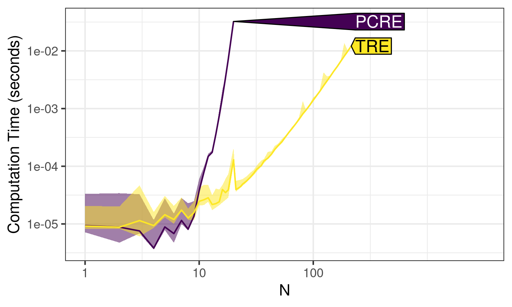
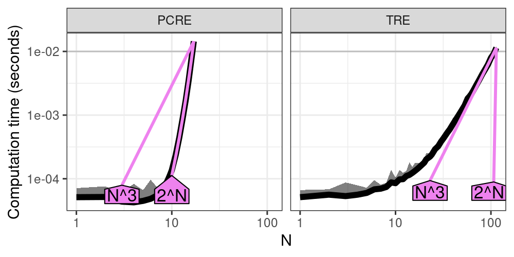
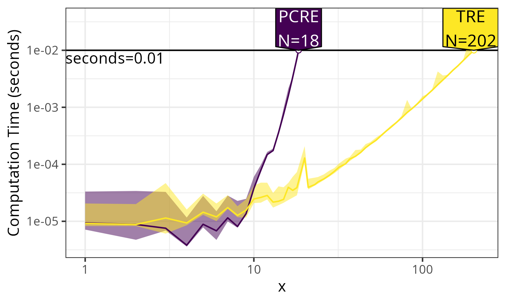
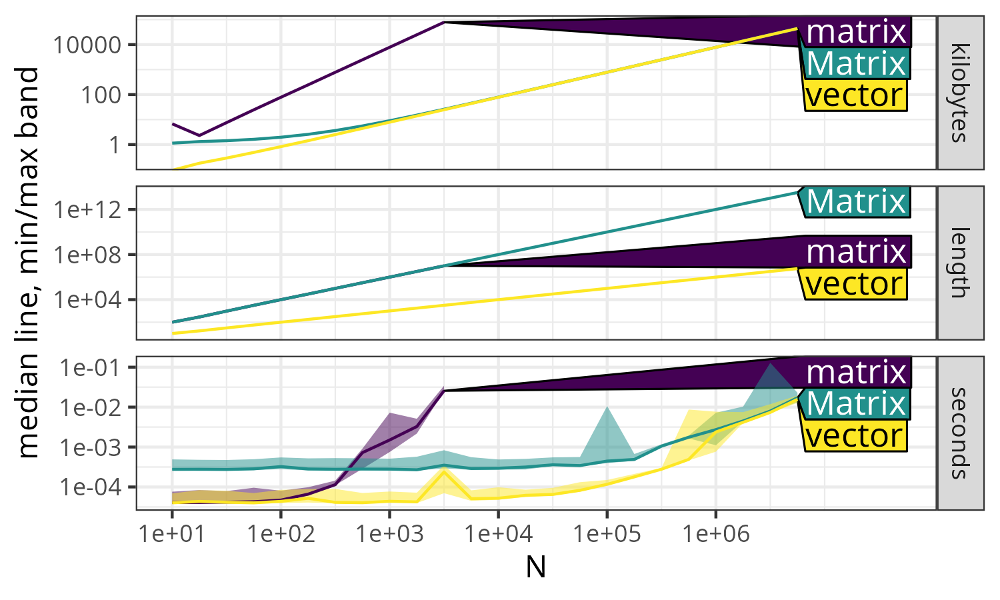
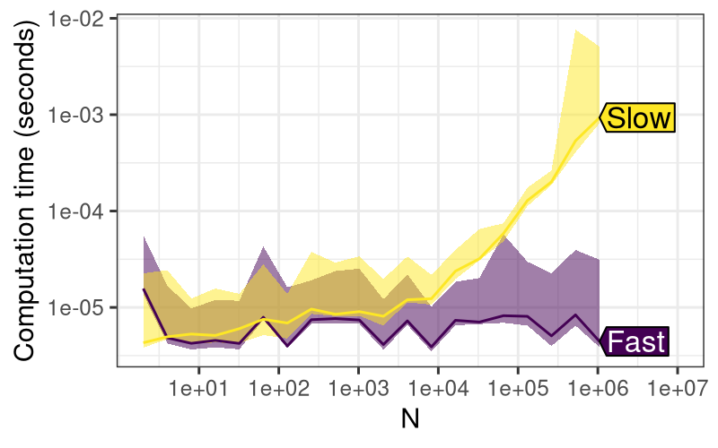
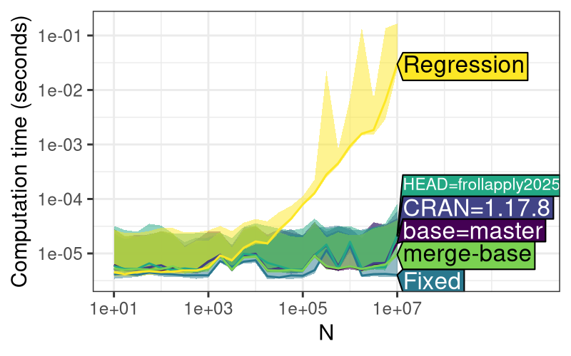
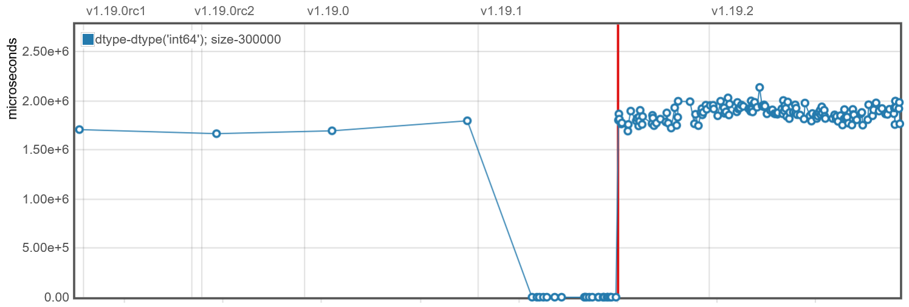
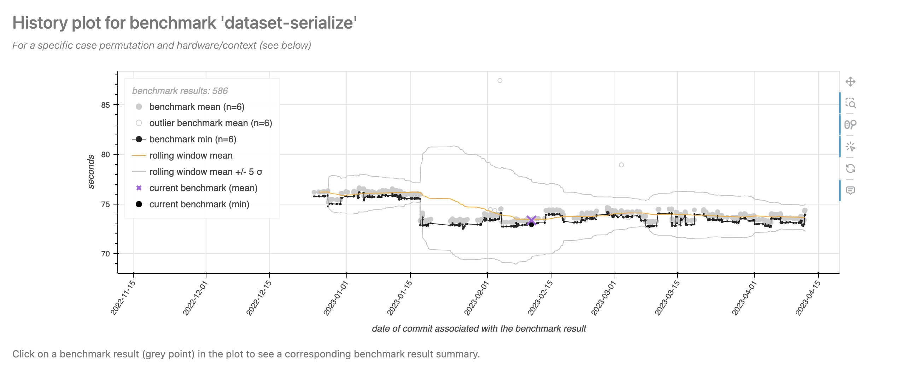

“Asymptotic Benchmarking Using the atime package” published in The R Journal.
Time and memory efficiency are important features of statistical software. When multiple implementations of a given algorithm are available, benchmarking can be used to determine which one is most efficient for a specific task. Typical benchmarking tools provide support for comparing time/memory usage of different computations for a data set of a given size N. In this paper, we present the atime package, which provides asymptotic benchmarking, meaning that time and memory (as well as other quantities) can be easily measured for a sequence of increasing data sizes. Asymptotic measurement allows the estimation of complexity classes (big-O notation) and provides a robust new method for testing the performance of R packages. This paper provides a detailed comparison of atime with similar packages, and a discussion of how atime has been used to improve efficiency in base R and data.table.
Computational efficiency, measured in terms of time and memory usage, is
a critical attribute of statistical software. As the scale and
complexity of data continue to grow, optimized code and algorithms
become more important. For example, the task of writing a large CSV file
can be accomplished by various functions, each with different
performance characteristics. In R, the base::write.csv() function is a
standard approach for writing CSV files (R Core Team 2022). The R
package data.table
offers a highly efficient fwrite() function, optimized for speed and
large datasets (Dowle and Srinivasan 2021). The readr::write_csv()
from the readr package is another CSV writing function (Wickham and
Hester 2018). In Python, there are other functions for CSV writing, such
as pandas.DataFrame.to_csv() and dask.dataframe.to_csv() (McKinney
et al. 2010; dask contributors 2016). To compare
the performance of these functions, common practice is to use packages
like
microbenchmark
(Mersmann 2024) or bench
(Hester and Vaughan 2024), which can run each function on a dataset of
fixed size \(N\), and then report metrics such as execution time and
memory usage.
However, running time and memory benchmarks using a single data size \(N\) can be misleading, because the chosen data size \(N\) may not be representative of typical use cases. Since most real-world use cases involve large data sizes \(N\), we propose an asymptotic benchmarking system, where the same code is measured across varying data sizes. For example, instead of benchmarking functions only for writing a CSV file with \(N = 100\) rows, we can also run them with \(N = 1000\) rows, and so on. This type of analysis makes it possible to estimate asymptotic complexity classes (big-O notation), which tells us how the time or memory usage grows as a function of data size \(N\). This paper discusses various complexity classes, such as linear, \(O(N)\); quadratic, \(O(N^2)\); etc. The big-O notation gives an upper bound on the growth rate of a function, which in the context of benchmarking is typically the time or memory usage, as a function of data size \(N\). For a more complete introduction to big-O notation, the textbook of Cormen et al. (2009) is a good reference.
In this article, we focus on two kinds of analyses: comparative benchmarking and performance testing, which we define below.
We use the term “comparative benchmarking” for efforts that aim to compare the performance (typically time and memory usage) of different functions that do the same computation (for example, different functions for writing CSV files). By comparing the performance of these different functions, the aim is to help users make informed choices about what software is most efficient for a particular data manipulation or analysis operation.
We use the term “performance testing” for efforts that aim to ensure that the software stays efficient when the code is updated (for example, changing the source code of a function for writing CSV files). Note that performance testing is a special case of comparative benchmarking, where the different functions to compare are different versions (before and after updating the function’s code). The goal is for package developers to be able to see if their code updates affect performance (time or memory usage). We use the term “continuous performance testing” for the automated and ongoing assessment of performance (time and memory usage), as part of the development workflow. Another term is “continuous benchmarking,” a synonym used by Bencher—a web application that provides a graphical user interface for visualizing historical results (Bencher web site authors 2024). We propose a system based on GitHub Actions, where performance testing is run for each commit of a Pull Request, and results can be used to avoid performance regressions before merging each Pull Request.
In this paper, we present a detailed comparison of atime with existing benchmarking tools, demonstrating how it can be used to improve performance in R packages like data.table.
In this section, we summarize several related software tools for comparative benchmarking and performance testing (Table 1).
Several software packages provide comparative benchmarking
functionalities. Base R’s system.time() provides a quick way to
measure the execution time of one piece of R code, for one data size (R
Core Team 2022).
rbenchmark wraps
system.time() to evaluate multiple expressions in a specified
environment (Kusnierczyk 2024).
microbenchmark
provides nanosecond-precision timing of multiple R expressions (Mersmann
2024), with controls such as randomization of execution order (but
without memory measurement).
bench measures time and
memory usage of several pieces of code (Hester and Vaughan 2024), for a
single data size (and this is what our proposed
atime package uses
internally). While bench::press() could be used to measure time/memory
usage for different data sizes, the proposed
atime package provides a
similar method with two advantages. First,
atime offers a faster
approach, which stops measurement if the median time exceeds a certain
threshold. Second, sometimes it is desirable to save the results of each
expression (for example, to check if the results are consistent). In
that case, bench::mark(check=TRUE) can be used to automatically stop
with an error if any pair of results is not equal. In contrast, the
proposed atime(result=TRUE) saves results but does not stop
automatically, so the user can implement their own checks, which is more
flexible.
There are a few examples of previous software for estimating asymptotic complexity classes (big-O notation) from empirical data. For the case when the asymptotic class is known, Scutari and Malvestio (2023) suggest using linear least squares to estimate the coefficients. This is similar to testComplexity (Chetia 2025), which is an R package that uses linear models to predict a complexity class (constant, log, linear, log-linear, quadratic) for an empirical time or memory curve. A drawback of the linear modeling approach is that all data sizes are equally weighted in the estimation of coefficients, but for asymptotic complexity class estimation, only large data sizes are relevant (time and memory measurements for small data sizes are typically dominated by constant overhead, which does not depend on data size). Therefore, the proposed atime package estimates the best fit asymptotic complexity class by aligning reference curves to the two largest data sizes, as explained below in the section “Asymptotic complexity class estimation.”
Several other software packages provide functionality for performance testing (Table 1). airspeed velocity is a Python library for performance testing (Droettboom et al. 2024), which is used by the numpy and pandas projects (NumPy Developers 2023; McKinney et al. 2010). Different tests are run for a given code version and data size, and then the results are saved to disk, creating a historical result. Performance is tested by comparing the results for the current code with the historical results. This approach can be useful if the data size is definitely relevant, and the results are always computed on the same computer. However, the usefulness of this approach can be limited because of two factors. First, different data sizes are relevant for testing on different computers, so some benchmarks could be irrelevant on a given computer (if the size is too small). Second, each version of the code to test is typically run on a different job under continuous integration services such as GitHub Actions. With such a setup, it is rarely possible to guarantee access to the same computer, which means that important variations in code versions can be mistaken for insignificant variations over multiple different servers. This type of performance testing system, therefore, results in a high level of false positives (the system says there is a performance regression, but there was just noise due to using different servers). Other similar tools include conbench (Conbench authors 2024), and bencher (Bencher web site authors 2024).
Bruynooghe and Contributors (2024) proposed pytest-benchmark, which integrates airspeed velocity benchmarking into pytest, which is a framework for unit testing. Typically, unit tests are defined for small data sets, which are not relevant to performance testing, so the usefulness of this approach is limited.
In contrast, we propose a performance testing method that overcomes the
drawbacks of the previous approaches. To overcome the first drawback
(fixed data size), we propose to define each test as a piece of code
that is a function of the data size, N. The code is run for increasing
data sizes until the median time taken is greater than some threshold
(default 0.01 seconds), which can be used to ensure that the largest
data sizes are relevant for performance testing. To overcome the second
drawback (historical runs of different versions on different servers),
we propose to keep a historical database of known fast/slow versions.
Instead of running each test using only the current version of the code
(HEAD in git terms), we additionally propose to run each test using the
known fast/slow versions, along with any other versions that are
relevant in the context of a pull request (CRAN, base, merge-base). The
advantage is that this approach eliminates most false positives, since
all measurements are computed on a single computer, in the same R
session. False positives are, of course, still possible, for example,
because of “noisy neighbors” on shared virtual machines where the tests
are run (but these issues also affect other testing software deployed on
virtual machines). The drawback of our proposed approach is that it
requires more computation time during each run to install and test
several versions of the code (instead of just the most recent version).
Our proposed method is similar to the “relative continuous benchmarking”
concept on bencher
(Bencher web site authors 2024), which is limited to testing a single
data size, using two code versions (main and feature branch); this
concept is also implemented in
touchstone (Walthert
and Wujciak-Jens 2024).
| Language | Notable Users | Result Display | Comp. Bench. | Perf. Test. | |
|---|---|---|---|---|---|
| atime (proposed) | R | data.table | PR comments | yes | yes |
| bench | R | no | no | yes | no |
| microbenchmark | R | no | no | yes | no |
system.time() |
R | no | no | yes | no |
| rbenchmark | R | no | no | yes | no |
| airspeed velocity | Python | numpy, pandas | web page | no | yes |
| conbench | any | arrow, velox | web page, PR comments | no | yes |
| touchstone | R | styler | PR comments | no | yes |
atimeIn this section, we demonstrate how
atime can be used for
comparative benchmarking. We use the example of benchmarking R code for
text processing using regular expressions (regex), using either PCRE
(version 2) or TRE, which are two C libraries that provide similar
regex functionality. Philip Hazel et al. (1997) introduced
PCRE, which stands for Perl-Compatible Regular Expressions, and Ville
Laurikari (2001) proposed TRE, which is an approximate regular
expression matching library. With base R functions like regexpr(),
PCRE is used when perl=TRUE and TRE is used when perl=FALSE. We
can compare the performance of these two libraries using
atime, and the first
step is to define a vector of data sizes, as in the code below.
> (subject.size.vec <- unique(as.integer(10^seq(0, 3, l=100)))) [1] 1 2 3 4 5 6 7 8 9 10 11 12 13 14 15
[16] 16 17 18 20 21 23 24 26 28 30 32 35 37 40 43
[31] 46 49 53 57 61 65 70 75 81 86 93 100 107 114 123
[46] 132 141 151 162 174 187 200 215 231 247 265 284 305 327 351
[61] 376 403 432 464 497 533 572 613 657 705 756 811 869 932 1000In the code above, we created a sequence of integer values that will be
used to define different data sizes to test with each library. Using a
grid of values on the log scale (10^seq) is recommended for studying
asymptotic time/memory usage. Using as.integer() converts each value
in the sequence to an integer, and unique() ensures that there are no
duplicates. For each of the data sizes above, we will create a subject
and pattern using the function below.
> create_subject_pattern <- function(N) list(
+ subject = paste(rep("a", N), collapse = ""),
+ pattern = paste(rep(c("a?", "a"), each = N), collapse = ""))
> str(create_subject_pattern(3))
List of 2
$ subject: chr "aaa"
$ pattern: chr "a?a?a?aaa"The create_subject_pattern() function above generates a list with two
elements, subject and pattern, based on the input parameter N. The
subject element is a string formed by repeating the letter "a", and
pattern is constructed by repeating the regex patterns "a?" and
"a". In the code below, we use this function in the setup argument
to create the data required to run the comparative benchmark. We
additionally provide the PCRE and TRE arguments, which are R
expressions that will be evaluated for each data size defined in the N
argument. Ten independent runs are used by default to estimate
computation time, and this can be configured by providing the times
argument.
> atime.list <- atime::atime(
+ N = subject.size.vec,
+ setup = {
+ N.list <- create_subject_pattern(N)
+ },
+ PCRE = with(N.list, regexpr(pattern, subject, perl = TRUE)),
+ TRE = with(N.list, regexpr(pattern, subject, perl = FALSE)))
> atime.listatime list with 61 measurements for
PCRE(N=1 to 17)
TRE(N=1 to 114) The output above shows the min and max \(N\) values that were run for each
of the expressions: PCRE went up to 17, and TRE went up to 114.
These data sizes exceeded the time limit (default 0.01 seconds), so
atime() does not run the corresponding expression for any larger data
sizes. Therefore, atime() is almost always much faster than running a
simple loop over data sizes. This is especially true when the different
expressions have different asymptotic time complexity classes, as in
this case (PCRE is much slower than TRE). In the code below, we use the
plot method, which results in
Figure 1.
> atime.list$unit.col.vec <- c(seconds = "median")
> plot(atime.list) + ggplot2::facet_null() +
+ ggplot2::scale_y_log10("Computation time (seconds)")
N. Line shows the median, and the shaded band shows
min/max, over 10 timings.
Note in the code above that the plot method returns a ggplot object,
which we modify by adding null facets and a different y scale. By
default, atime measures
memory in kilobytes, as well as computation time in seconds. To simplify
the discussion of this first example, we set the unit.col.vec element
in the code above, which ensures that only the computation time is
displayed (median line and min/max band over 10 timings). See
Figure 4 for a more
complicated example that also shows memory usage.
Figure 1 shows the computation time for
PCRE and TRE, making it easy to see the ranking of these libraries
(TRE is faster than PCRE).
To estimate the asymptotic complexity class of each expression, we use the code below:
> (best.list <- atime::references_best(atime.list))references_best list with 61 measurements, best fit complexity:
PCRE (2^N seconds)
TRE (N^3 seconds)The code above fits an asymptotic reference curve for each of several complexity classes to each empirical timing curve. The complexity classes that are implemented by default include linear \(O(N)\), log \(O(\log N)\), quadratic \(O(N^2)\), exponential \(O(2^N)\), etc. The user can define complexity classes to use if the defaults are not sufficient. An asymptotic reference curve is fit for each complexity class by aligning it with the empirical curve for the largest \(N\) value. The output is the best fit asymptotic reference curve for each empirical curve, which is defined as the reference curve that is closest to the empirical curve, for the second to largest \(N\) value. To visualize the results, we use the code below.
> plot(best.list) + ggplot2::facet_grid(. ~ expr.name) +
+ ggplot2::scale_y_log10("Computation time (seconds)")
Figure 2 shows the timings of each
expression as a function of data size \(N\) (black), as well as two
asymptotic reference curves (violet, closest reference curve that is
smaller/larger, with text labels that can be interpreted in terms of big
O notation). Since we have chosen \(N\) and the time limit appropriately,
we are able to observe the following. For small values of \(N\), the
timings are dominated by the overhead, resulting in a nearly constant
curve (especially for PCRE). As \(N\) increases, the PCRE curve becomes
super-linear, indicating exponential complexity, as shown by the
increasing slope in the log-log plot, and the almost perfect alignment
between the black empirical curve and the violet exponential \(O(2^N)\)
reference curve. Note that this example is a worst case for the PCRE
library, which is actually quite fast for other, more typical subjects
and patterns. The worst case is due to a pathological pattern and
subject that induces catastrophic backtracking. For TRE, two
references are shown: cubic \(O(N^3)\) appears to be the best fit, whereas
exponential \(O(2^N)\) is the closest reference that is slower. Note that
all polynomial references, including cubic \(O(N^3)\), appear as linear
asymptotic trends on the log-log plot. Overall,
Figure 2 shows the empirical timings,
along with best fit asymptotic reference curves, which indicate that
PCRE is exponential time, and TRE is polynomial time, as a function of
the size of the subject/pattern \(N\).
When comparing algorithms in terms of computational resources, we can either compare the time/memory required for a given data size \(N\) (latency), or show the data size \(N\) possible for a given time/memory budget (throughput). To compare latency for a given data size, we can simply subset the data table of empirical measurements, as below:
> atime.list$measurements[N==15, .(expr.name, seconds=median)] expr.name seconds
1: PCRE 0.0034745010
2: TRE 0.0001235669The output above shows that TRE is more than ten times faster than PCRE, at the given data size. To compare throughput, we use the code below.
> (pred.list <- predict(best.list))atime_prediction object
unit expr.name unit.value N
1: seconds PCRE 0.01 16.4573
2: seconds TRE 0.01 109.7062The output above shows a table with one row per expression. It shows
that at the default time limit (0.01 seconds), TRE has a much larger
estimated throughput than PCRE (N column). The throughput is estimated
using linear interpolation on the log-log plot. The atime_prediction
object has a plot method, which can be used to compare throughput, as in
the code below.
> plot(pred.list) + ggplot2::facet_null() +
+ ggplot2::scale_y_log10("Computation time (seconds)", limits=c(NA, 5e-2))
Figure 3 shows the throughput, which is
the data size N that can be handled in a given amount of time. It is
clear that the TRE can handle about 10x larger N for the given time
limit.
In this section, we explain how
atime can be used to
analyze asymptotic properties of other units, in addition to computation
time. We consider the example of creating vectors and matrices of size
\(N\). In R, dense matrices are created using matrix(), whereas sparse
matrices are created using Matrix(). The advantage of using a sparse
matrix is that when the number of non-zeros is sub-quadratic, then the
memory usage should also be sub-quadratic (whereas memory usage with a
dense matrix would be quadratic). In the code below, we use
atime to verify these
properties, and we also compare with a one-dimensional numeric()
vector (linear memory usage). Finally, the code below demonstrates usage
of the result argument, which is a function applied to the result of
each expression. Because this function returns a data frame with one
row, the column in that data frame (length) is interpreted as another
unit to analyze (in addition to default units, time in seconds and
memory in kilobytes).
> library(Matrix)
> vec.mat.result <- atime::atime(
+ N = 10^seq(1, 7, by=0.25),
+ vector = numeric(N),
+ matrix = matrix(0, N, N),
+ Matrix = Matrix(0, N, N),
+ result = function(x)data.frame(length = length(x)))
> plot(vec.mat.result)
The code above creates Figure 4, in which there are three panels, each representing a different unit of measurement, as a function of data size \(N\).
This panel shows memory usage. The \(N\times N\) sparse Matrix and
\(N\)-vector both exhibit linear \(O(N)\) asymptotic memory usage,
while \(N\times N\) dense matrix requires quadratic \(O(N^2)\) memory,
as shown by the greater slope in the log-log plot.
This panel represents the output of the length function. Both
matrix and Matrix structures have the same quadratic \(O(N^2)\)
length values, whereas vector has a smaller linear \(O(N)\) length
asymptotically, as shown by its smaller slope on the log-log plot.
This panel displays execution time. For small values of N,
Matrix is slower than both vector and matrix due to a small
constant overhead. However, as N increases, Matrix and vector
converge to the same linear \(O(N)\) asymptotic time complexity, much
faster than the quadratic \(O(N^2)\) time matrix for large N.
As in the previous section, references_best() can be used to estimate
asymptotic complexity classes, for each of the expressions (matrix,
Matrix, vector), and each of the units (kilobytes, length, and
seconds). Additionally, the predict() method can be used to estimate
the throughput of each expression, for a given limit of seconds,
kilobytes, and/or length.
Finally, we note that Figure 4 is a great example of the benefits of asymptotic measurement (as a function of N). In this example, we obtain different conclusions for different values of N:
Matrix is significantly slower than matrix, which is about the
same as vector. But this observation is not indicative of
performance in large data, because all methods are in the
non-asymptotic regime (timings are dominated by constant overhead
operations, which do not depend on the data). Also note the small
spike for matrix at N=10, which may be attributed to garbage
collection, and can be safely ignored since we are more concerned
with performance for large N.
matrix is significantly slower than Matrix, which is
significantly slower than vector. Again, this observation is not
indicative of performance in large data, because Matrix and
vector are in the non-asymptotic regime (but matrix is).
matrix is significantly slower than Matrix, which is about the
same as vector. This observation is indicative of performance in
large data, because all methods are in the asymptotic regime
(timings increase with data size).
The observations above highlight how the conclusions about which method
is fastest depend on the data size N. Asymptotic analyses like
Figure 4 are
advantageous, because they allow the reader to immediately see if each
method is in the asymptotic regime (which is desirable for comparing
performance in large data).
The atime package also provides functionality for performance testing R packages that are versioned using git. For performance testing an R package, we compute asymptotic time and memory usage for different git versions, and visualize the results to ensure that package code modifications do not result in performance regressions. In the context of our paper, a performance regression is a significant increase in execution time or memory usage for a particular test case. In this section, we explain how atime has been used to implement performance testing for data.table, an R package with users that depend on its impressive performance.
The atime package
provides functions for prototyping test cases, defining test cases in an
R package, and then running the test cases. The first step of
performance testing is typically prototyping, which means experimenting
with different test code, package versions, and data sizes until
significant differences in performance can be observed. Prototyping is
done using atime_versions(), which runs a given piece of R code, for
several data sizes N, and for several package versions (defined using
git SHA1 hashes). After prototyping, the arguments used with
atime_versions() can be reused with atime_test(), which is used to
define test cases in an R package. Finally, atime_pkg() can be used to
run all test cases in an R package, or atime_pkg_test_info() can be
used to extract test metadata and run one test at a time.
atime_versions()The first step of performance testing is typically using
atime_versions() for prototyping. Some arguments of atime_versions()
are the same as atime(): N is a sequence of data sizes, and setup
is an expression to create data for use in the test. The different
package versions are specified as named arguments (Fast and Slow in
the code below) whose values should be SHA1 hashes of the desired git
versions. Additionally, pkg.path is the path to a local clone of a git
repository containing the R package, and expr is an expression to time
for each different package version. Note that this expression must
contain a double or triple colon reference to the package name, such as
data.table:::shallow() in the code below. This is necessary because
the package name is replaced with an edited package name. Testing the
different versions is implemented by installing different versions of
the package to the same R package library. The different package
versions have different names, so they can be loaded and run in the same
R session. The names of the different R packages are created by
appending the SHA1 hash to the package name, for example
data.table.c4a2085e35689a108d67dacb2f8261e4964d7e12. The
pkg.edit.fun argument is a function to edit the package, so that it
can be installed and loaded using the versioned package name. A default
pkg.edit.fun is provided that works with most R packages, including
packages that use the
Rcpp interface of
Eddelbuettel and François (2011). The default editing function finds
instances of the package name in source code and metadata files (such as
DESCRIPTION, NAMESPACE, RcppExports.cpp), and replaces the package name
with the edited package name. Because
data.table has some
special configuration and build files, it requires creating a custom
function, edit.data.table(), see GitHub repository for details,
https://github.com/Rdatatable/data.table/blob/master/.ci/atime/tests.R.
We consider the example usage in the code below.
atime::atime_versions(
pkg.path = "~/data.table",
pkg.edit.fun = edit.data.table,
setup = {
set.seed(1L)
dt <- data.table(a = sample.int(N))
setindexv(dt, "a")
},
expr = data.table:::shallow(dt),
Slow = "b1b1832b0d2d4032b46477d9fe6efb15006664f4",
Fast = "9d3b9202fddb980345025a4f6ac451ed26a423be")The code above runs a performance test on two different versions of the
data.table package
(Fast and Slow), involving computing a shallow copy of an indexed table
with a variable number of rows \(N\). It is expected that this operation
should be constant \(O(1)\) time, independent of the number of rows \(N\).
When we use the plot method
(Figure 5, left), we see that the Slow
version time is increasing with \(N\), whereas the Fast version time is
constant. Results like this, where significant differences can be
observed between package versions, indicate that the code is a good
candidate for a performance test. To summarize this section,
atime provides the
atime_versions() function, which can be used to compare the asymptotic
performance of two git versions of an R package.


plot() method
for atime_versions() shows the asymptotic time taken for
shallow(), which performs a shallow copy of a data table
with N rows, an operation
which is expected to be constant time (as in Fast version, but not Slow
version). Right: the same test case ran in the context
of a Pull Request on GitHub, resulting in three additional versions
(CRAN, HEAD, base). It is clear that all versions other than
Slow/Regression are about the same speed as Fast/Fixed, which indicates
that HEAD is OK to merge into the base.
After having used atime_versions() to prototype a performance test,
the next step is to move the test code into the R package. We propose
defining performance test cases in the object named test.list defined
in the pkg/.ci/atime/tests.R file, in a git repository pkg that
contains an R package. Each element of the list should have an
informative name for the test case, which will be used to display the
results. Each value should be a list of named arguments to pass to
atime_versions(), such as setup, expr, Fast, and Slow. Each
test case is typically created based on a historical regression or
performance improvement. For example, the R code below defines the test
case involving shallow(), as discussed in the previous section.
test.list <- atime::atime_test_list(
N = as.integer(10^seq(1, 7, by=0.25)),
pkg.edit.fun = edit.data.table,
"shallow speed improved in #4440" = atime::atime_test(
setup = {
set.seed(1L)
dt <- data.table(a = sample.int(N))
setindexv(dt, "a")
},
expr = data.table:::shallow(dt),
Slow = "b1b1832b0d2d4032b46477d9fe6efb15006664f4",
Fast = "9d3b9202fddb980345025a4f6ac451ed26a423be"
)
)The code above uses the helper functions atime_test_list() and
atime_test() to define the test case. Both functions are wrappers
around list(), with non-standard evaluation for special arguments like
setup and expr (un-evaluated expressions to pass to
atime_versions). The arguments N and pkg.edit.fun are special
names that are recognized by atime_test_list, and shared across all of
the test cases in the list (only one test case shown above; see
data.table
repository for more). In addition to the code above, it is recommended
to add names and/or comments that explain the origin of the test case.
For example, the test case name "shallow speed improved in #4440"
references the PR number, which resulted in the performance improvement.
Also, for each SHA1 hash, we recommend a comment such as the following,
which was used to document the origin of the Slow commit:
Parent of the first commit (https://github.com/Rdatatable/data.table/commit/0f0e7127b880df8459b0ed064dc841acd22f5b73) in the PR (https://github.com/Rdatatable/data.table/pull/4440/commits) that improves speed.
Such comments are useful because they can be used to double-check the
validity of the SHA1 commit IDs. In this example, on the PR4440 web
page, it can be seen that 0f0e712 is the first commit, and on that
commit page, it can be seen that b1b1832 is indeed its parent (which is
a good choice for a historical Slow reference because it occurred before
the PR that introduced the performance improvement).
After having defined test cases as above, all the test cases in the
package can be run locally by using atime_pkg("path/to/pkg"). It runs
atime_versions() using the arguments provided in each test case, and
then saves the results (RDS file), along with summary PNG figure files,
to the directory pkg/.ci/atime. Alternatively, to run and visualize
the results for a single test case, the code below can be used.
pkg.info <- atime::atime_pkg_test_info("~/R/data.table")
one.call <- pkg.info$test.call[["shallow regression fixed in #4440"]]
one.result <- eval(one.call)
plot(one.result)The atime_pkg_test_info() function returns a list of information about
the performance test cases, without actually running them yet. The
pkg.info$test.call object is a list of un-evaluated expressions, each
of which calls atime_versions() for a given test case. The code
eval(one.call) runs one performance test, and the plot method can be
used to visualize the results
(Figure 5, right). Running the test case
locally adds three versions (Table 2): HEAD (current git version in local
clone), base (GITHUB_BASE_REF or master), and CRAN (current release).
The performance of these versions can be compared to the historical
commits (Fast and Slow) to evaluate the performance of the current code.
GitHub Actions is a continuous integration service that can run
arbitrary code after every push to a git repository. A GitHub Action was
created to facilitate performance testing of the changes that are
introduced in a Pull Request (PR). The primary motivation behind this
was to help ensure that
data.table
maintains its code efficiency as PRs are merged. The GitHub Action for
performance testing can be enabled by creating a YAML file in
pkg/.github/workflows (see atime web page for details). The GitHub
Action first runs atime_pkg() after each push to a branch involved in
a PR. The GitHub Action then creates a comment in the PR, with the
summary figure that shows the result from the most recent performance
test. The comment gets updated after each push to avoid cluttering the
PR. The plot shows a column for each test case, with time and memory
trends across different data.table versions
(Table 2). In addition, the comment contains a
link to download all the atime-generated result files (figure PNG
files and RDS).
Several versions are provided automatically by atime, based on the context of the PR (base, HEAD, merge-base, CRAN). Other versions can be provided by the user based on what is relevant for each test case (Before, Regression, Fixed, Fast, Slow). For test cases that involve a regression, we recommend the version names Before, Regression, and Fixed, to indicate versions relative to the regression (Before and Fixed should be more efficient than Regression). For test cases that involve a performance improvement (or no known regression), we recommend using the version names Fast and Slow.
| Version name | Defined? | Version description |
|---|---|---|
| Fast | user | An efficient commit |
| Slow | user | An inefficient commit |
| Before | user | An efficient commit before a performance regression |
| Regression | user | An inefficient commit affected by a performance regression |
| Fixed | user | An efficient commit after fixing a performance regression |
| CRAN | local | Latest version on CRAN |
| HEAD | local | Most recent commit in current branch |
| base | GitHub | Target branch of PR (typically main or master), if current branch is involved in a PR |
| merge-base | GitHub | The common ancestor between base and HEAD |
In terms of performance testing functionality, the most similar R package to atime is touchstone, which also provides functions for performance testing, but without asymptotic measurement as a function of several data sizes.
Both touchstone and atime use relative performance testing, meaning that each test case is run using different versions of the R package. Touchstone allows specifying two branches, corresponding to the HEAD of a PR and its base branch. In addition to those branches, atime supports other branches that are important in the context of a PR (merge-base and CRAN), as well as user-defined commits that represent historical Fast/Slow versions.
touchstone::branch_install() installs each branch to a separate
library, and uses callr
to run each branch in a separate R process. In contrast,
atime::atime_versions() installs each package version to the same
library (using a different package name for each version). Therefore,
atime allows the
different R package versions to be loaded into the same R session, for
more direct comparison (reduced noise).
atime::atime() and bench::press()In terms of comparative benchmarking functionality, the function most
similar to atime::atime() is bench::press(), which allows the user
to specify several parameters to vary (not only data size N). The main
advantage of atime is
that it provides convenient features for benchmarking code that scales
with data size, \(N\). For parameters other than N, the atime_grid()
function can be used, as explained below.
The bench package can be used for asymptotic benchmarking, as long as the max data size \(N\) is chosen to yield a reasonable computation time for all expressions. For example, bench can be used to do a small-scale asymptotic comparison of PCRE and TRE, via the code below.
bench::press(
N = 1:20,
perl = c(TRUE, FALSE),
with(create_subject_pattern(N), bench::mark(
iterations = 10,
regexpr(pattern, subject, perl = perl))))The code above is an attempt to replicate
Figure 1, but with smaller data sizes
(max=20 instead of 1000, which would be too slow to compute using PCRE).
In the code above, we use the bench::press() function to perform
benchmarking across multiple parameter combinations (N and perl).
For each combination, it uses create_subject_pattern(N) to generate a
subject and pattern, and subsequently measures the performance of
the regexpr function using bench::mark(). The regexpr function
performs regular expression matching with the generated pattern on the
subject, using the current value of perl to toggle Perl-compatible
regex. The benchmarking process is repeated iterations = 10 times for
each parameter combination. Below we show the analogous
atime code.
atime::atime(
N = 1:20,
setup = N.data <- create_subject_pattern(N),
expr.list = atime::atime_grid(
list(perl = c(TRUE, FALSE)),
regexpr = regexpr(N.data$pattern, N.data$subject, perl = perl)))The code above uses the expr.list argument, which is a list of
expressions to be benchmarked, constructed using atime::atime_grid,
which defines a grid of parameter combinations, similar to
bench::press(). In this case, the grid includes one parameter, perl,
with values TRUE or FALSE. Overall, we see from this example that
the atime and
bench code is very
similar, for the case where the max data size \(N\) is small enough to be
computable by all expressions.
An example that is more difficult to handle using bench::press() would
be the analysis presented in
Figure 4, which shows an
extra unit (length, in addition to seconds and kilobytes), and involves
very different time/memory scales (dense matrix is orders of magnitude
less efficient than sparse Matrix). That analysis requires two useful
features that are provided by atime().
To measure quantities other than seconds and kilobytes as a function
of N (such as length in
Figure 4), a custom for
loop is required with bench::press().
If an expression takes longer than the time limit (default 0.01
seconds), then custom code is required for bench::press() to not be
run for any larger N values. And in the case of
Figure 4, it is also
important to avoid running the large N values, to avoid running out of
memory.
The 28 lines of code below can be used to achieve these two features
using bench::press(), but it is complicated relative to the
corresponding 6 lines of atime code that was used to create
Figure 4 (see previous
section).
seconds.limit <- 0.01
done.vec <- NULL
measure.vars <- c("seconds","kilobytes","length")
press_result <- bench::press(N = N_seq, {
exprs <- function(...)as.list(match.call()[-1])
elist <- exprs(
vector=numeric(N),
matrix=matrix(0, N, N),
Matrix=Matrix(0, N, N))
elist[names(done.vec)] <- NA #Don't run exprs which already exceeded limit.
mark.args <- c(elist, list(iterations=10, check=FALSE))
mark.result <- do.call(bench::mark, mark.args)
desc.vec <- attr(mark.result$expression, "description")
mark.result$description <- desc.vec
mark.result$seconds <- as.numeric(mark.result$median)
mark.result$kilobytes <- as.numeric(mark.result$mem_alloc/1024)
mark.result$length <- NA
for(desc.i in seq_along(desc.vec)){
description <- desc.vec[[desc.i]]
result <- eval(elist[[description]])
mark.result$length[desc.i] <- length(result)
}
mark.result[desc.vec %in% names(done.vec), measure.vars] <- NA
over.limit <- mark.result$seconds > seconds.limit
over.desc <- desc.vec[is.finite(mark.result$seconds) & over.limit]
done.vec[over.desc] <<- TRUE
mark.result
})The code above uses entries of done.vec to keep track of which
expressions have already gone over the time limit. It also uses a for
loop to evaluate each expression and save the length of the result to
analyze as a function of N. Overall, the code is substantially more
complex than the corresponding
atime code, because it
has to re-implement two features that
atime provides.
To conclude this section, we have discussed the use of
bench and
atime packages for
comparative benchmarking in R. Both methods can be used for comparative
benchmarking across different parameter configurations. However,
atime::atime() provides two key features which are not present in
bench::press(): measurement of arbitrary units (other than time and
memory), and stopping evaluation for expressions that go over a time
limit.
In this section, we provide an empirical comparison between atime and bench, in terms of how much time it takes overall to compute benchmark results. Our goal is to demonstrate an advantage of the proposed asymptotic approach implemented in atime: we can gather a larger range of measurements in a comparable or smaller amount of time.
First, we considered the regular expression example in Figure 1. The overall time taken by atime to compute the data for this benchmark was 1.7 seconds, and it resulted in a range of measurements (N=1 to 18 for PCRE, and N=1 to 151 for TRE). For comparison, we ran bench with various data sizes from N=19 to N=23, and we show the timings in Table 3. The most comparable amount of time for bench was 1.69 seconds for data size N=21, which is slightly larger than the largest data size for PCRE with atime (N=18), but significantly smaller than the largest data size for TRE with atime (N=151). Smaller data sizes were faster (0.42 seconds for N=19), and larger data sizes were slower (6.95 seconds for N=23).
Second, we considered the sparse matrix example in Figure 4. The overall time taken by atime to compute the data for this benchmark was 2.21 seconds, and it resulted in a range of measurements (N=10 to 3,000,000 for Matrix, N=10 to 3,000 for matrix, N=10 to 10,000,000 for vector). For comparison, we ran bench with various data sizes from N=5,000 to N=100,000, and we show the timings in Table 4. The most comparable amount of time for bench was 3.22 seconds for data size N=10,000, which is slightly larger than the largest data size for the matrix with atime (N=3,000), but significantly smaller than the largest data size for the other atime measurements (millions for Matrix and vector). Smaller data sizes were faster (0.66 seconds for N=5,000), and larger data sizes were either slower (11.53 seconds for N=20,000) or did not run (not enough memory to run the matrix for N=100,000).
Overall, the comparisons in this section have shown the advantages of the atime approach, which computes measurements for a range of data sizes until the median time exceeds a limit (default 0.01 seconds). The atime approach can be faster overall, for more informative results (measurements for a range of data sizes, not just one data size).
| package | seconds | PCRE data sizes | TRE data sizes |
|---|---|---|---|
| bench | 0.42 | 19 | 19 |
| bench | 0.81 | 20 | 20 |
| bench | 1.69 | 21 | 21 |
| atime | 1.70 | 1–18 | 1–151 |
| bench | 3.40 | 22 | 22 |
| bench | 6.95 | 23 | 23 |
| package | seconds | Matrix data sizes | matrix data sizes | vector data sizes |
|---|---|---|---|---|
| bench | 0.66 | 5000 | 5000 | 5000 |
| atime | 2.21 | 1e+01–3e+06 | 1e+01–3e+03 | 1e+01–1e+07 |
| bench | 3.22 | 10000 | 10000 | 10000 |
| bench | 11.53 | 20000 | 20000 | 20000 |
| bench | out of memory | 1e+05 | 1e+05 | 1e+05 |
Python continuous benchmarking software includes airspeed velocity and conbench. Whereas the proposed atime method keeps a historical database of commits which are known to be Fast or Slow, these packages keep a historical database of timings for all commits (each timing computed once for that commit and then saved to compare with timings computed for other commits). Another major difference is that each atime test results in several measurements for a set of increasing data sizes, whereas these other tools use a fixed data size (which may not be relevant on different computer hardware). Assuming a relevant data size is used, these alternative approaches could be very useful, as performance regressions could be visualized as abrupt increases in computation time over the history of commits. Examples of web pages that are generated by these packages are shown in Figure 6, which show results taken from https://pv.github.io/numpy-bench/#bench_trim_zeros.TrimZeros.time_trim_zeros and https://conbench.github.io/conbench/pages/lookback_zscore.html. The limitation of this approach is that it requires careful control of the underlying hardware that was used to compute the benchmark timings for each commit. If there are variations in the hardware over time, that can result in false positive changes in benchmark computation time, which makes it more difficult to detect real performance regressions due to changes in the code. atime does not suffer from this drawback, because it computes timings for each data size and code version at test time on the same machine (Table 2), so it does not need to keep a database of historical benchmarks. Instead of presenting the user a time series plot with different code versions on the X axis, atime presents data size on the X axis (Figure 5), with different code versions represented as different colored empirical timing curves. False positives are, of course, still possible with atime, for example, because of “noisy neighbors” on shared virtual machines, or random garbage collection events, but these issues also affect other testing software.


In this paper, we presented the atime package for comparative benchmarking of R code and performance testing in R packages. The unique feature of atime is asymptotic measurement of time and memory (as a function of data size), which makes it easy to see when the code performance is in the asymptotic regime (dependent on data size). The atime package enables users to compute and visualize asymptotic timings, including comparing empirical timings with theoretical references and estimating throughput. Several examples illustrated how atime can be applied for comparative benchmarking of different R functions that perform similar computations (but with different performance characteristics). Using data.table as an example, we explained how atime can be used for performance testing of R packages across multiple git versions.
Additionally, we compared
atime’s syntax and
functionality with other tools used for performance testing and
benchmarking. Compared to other benchmarking tools (which support only a
single data size), the unique feature of
atime is support for
sequences of data sizes. We showed that it is technically possible to
use bench::press() for asymptotic analysis across a sequence of small
data sizes, but atime is
preferable because it supports convenience features such as stopping if
a timing exceeds a time limit. Another similar package is
touchstone, which
provides a GitHub Action for performance testing based on comparing
HEAD/base versions, but does not support asymptotic analysis (varying
data sizes).
A limitation of atime
comes from the fact that it uses bench::mark() to measure time/memory
for each data size. This dependency means that
atime inherits both the
strengths and limitations of bench::mark(). Because this method uses
Rprofmem(), it is limited to measuring R memory allocations (and can
not measure other C memory allocations). Also, this method runs timings
for each expression several times, without re-running the setup
expression. This makes it difficult to run timings on functions that
alter their inputs by reference. For example, data.table::setkey(DT)
alters DT by reference (sort in place); the first execution for memory
measurement will sort the data, and subsequent executions for time
measurement will do a linear scan to verify the data is sorted (faster).
Future versions of atime
could overcome this limitation by removing the dependency on
bench and implementing a
time/memory measurement procedure that runs the setup expression
before each measurement.
We note that atime is
currently being used for continuous performance testing of
data.table, with 16
test cases currently implemented, and running for every pull request on
GitHub. The atime
methodology has also been used to uncover and fix asymptotic performance
issues in base R. For example, asymptotic analysis of write.csv()
revealed that it was quadratic \(O(N^2)\) in the number of columns \(N\),
whereas the expected complexity was linear \(O(N)\). Sebastian Meyer
realized this issue was related to another issue with replacing columns
via [.data.frame, which was observed to be super-linear, but expected
to be linear. The fix for these two issues appeared in 2023 with R
version 4.3.0. As mentioned in the introduction,
atime has also been used
for comparative benchmarking of CSV reading and writing functions (for
details, see https://tdhock.github.io/blog/2023/dt-atime-figures/ and
https://tdhock.github.io/blog/2024/pandas-dt/). Another improvement to
base R was in substring(), which was expected to be linear \(O(N)\) time
in the number of outputs \(N\), and gregexpr(), which was expected to be
linear \(O(N)\) time in the number of characters \(N\) in the subject. Our
asymptotic analysis revealed that both operations were quadratic
\(O(N^2)\) time, and Tomas Kalibera merged the proposed fixes into R
version 3.6.0 (2019). Overall, we have shown how
atime simplifies such
asymptotic analysis, and we expect that it will be a useful tool for
future analyses of other R functions.
Reproducible research statement: The following repositories contain all the code for reproducing the figures in this paper:
https://github.com/tdhock/atime-article
https://doi.org/10.5281/zenodo.14796684
data.table, microbenchmark, bench, atime, rbenchmark, testComplexity, airspeed velocity, conbench, bencher, pytest-benchmark, pytest, touchstone, Rcpp, callr
ChemPhys, Finance, HighPerformanceComputing, NumericalMathematics, TimeSeries, WebTechnologies
This article is converted from a Legacy LaTeX article using the texor package. The pdf version is the official version. To report a problem with the html, refer to CONTRIBUTE on the R Journal homepage.
Text and figures are licensed under Creative Commons Attribution CC BY 4.0. The figures that have been reused from other sources don't fall under this license and can be recognized by a note in their caption: "Figure from ...".
For attribution, please cite this work as
Hocking, "Asymptotic Benchmarking Using the **atime** package", The R Journal, 2026
BibTeX citation
@article{RJ-2026-013,
author = {Hocking, Doris Amoakohene, Anirban Chetia, Igor Steinmacher, Toby},
title = {Asymptotic Benchmarking Using the **atime** package},
journal = {The R Journal},
year = {2026},
note = {https://doi.org/10.32614/RJ-2026-013},
doi = {10.32614/RJ-2026-013},
volume = {18},
issue = {1},
issn = {2073-4859},
pages = {1}
}